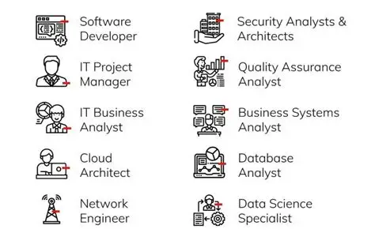

The Department of Technology and Analytics is dedicated to preparing students for a world driven by data and digital innovation. We combine strong theory with practical, hands-on learning so graduates are ready for modern careers.
What we offer
Our programmes cover software development, data analytics, networking, and emerging technologies. Students learn from experienced lecturers and work on real-world projects that build both technical and problem-solving skills.

Join Our community
Whether you are starting your journey in technology or building on existing skills, our department offers a supportive and inspiring environment. We invite you to explore our courses and become part of our growing community.